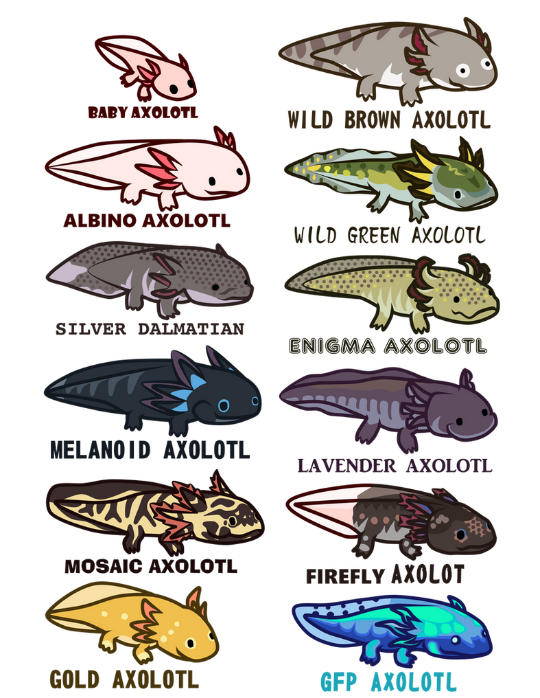
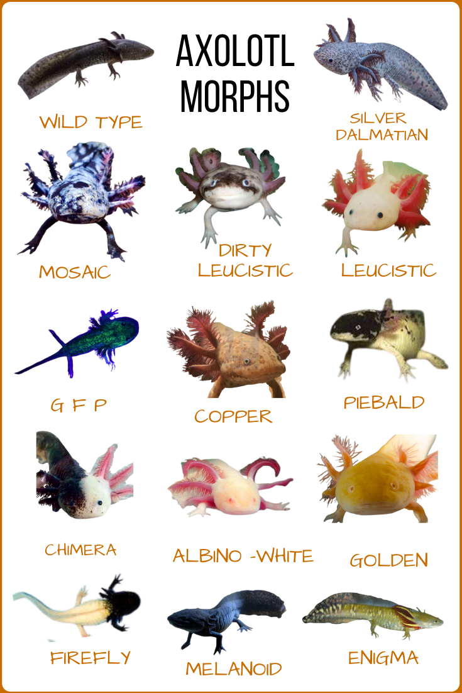

Axolotls!
Axolotl Facts

Lists
- Axolotls look like babies their whole life! They are neotenic creatures which means they achieve sexual maturity without ever losing any of their larval features. So, while many amphibians like the salamander will eventually live on land, the axolotls reach adulthood without ever undergoing metamorphosis, so they keep their feathery external gills and remain aquatic.
- Axolotls have a mating dance! Once they reach about six months old, they begin to mate and the process involves them moving together in a circular, dance-like fashion. It’s only right when courting a lady to invite her to dance, first!
- Axolotls are carnivores! Because they are neotenic, their teeth never develop so they must rely on suction to consume food. When it comes to the diet of an axolotl, they do not require daily feeding but when they do eat, they’re not picky. They’ll feast on anything from worms and fish to crustaceans and insects.
- Axolotls come in all sorts of colors! The patterns and pigmentations vary but most often you will see pink, brown or black with specks of olive or gold. But something even cooler is that they can adjust their color to camouflage themselves with their surroundings.


- Axolotls are incredible healers! Like lizards that can regrow their tails, axolotls can regrow multiple body parts including its limbs and internal organs such as the brain, lungs and even heart! This makes them one of the most resilient animals on earth.
- New things have been added!
This text will display on your site! Jan 19
Testing for website
Enter message Here
It Works!
New things have been added!
Links
About Page
Information Source
.jfif)